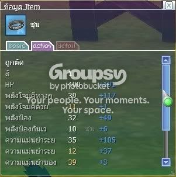

พักร้อนเตมนี้ดีเหรอ - -
dEzlce เขียน:ไอ้ Caibi Bag มันใช้ยังไงหรอคับผมกดนั่งธรรมดาแล้วไม่เห็นมีไรเลยอะคับมันบอกว่าอยู่ในสถานที่ที่ใช้ skill ได้ งง - -
ปล.ขอบคุณร่วงหน้านะคับ
ต้องเอาไปใช้ในดันเจี้ยนถึงจะใช้ได้น่ะ มันจะฟื้น hp ตามเลเวลของสกิล x10
แค่มีเทคนิคอยู่อีกอย่างนึงคือต้องนั่งชิดมุมแล้วกดใช้สกิลนี้ แล้วเลือดจะเด้ง เป็นร้อยเลยอ่ะ
รินริ เขียน:ใครว่าเอซโพฟันไม่แรงข้าน้อยม่ายเชื่อ....ถึงเบลดเค้าจะฟันเดี่ยวๆโหดก็จิง แต่เราก็มีถึง2ดามเมจนะเจ้าค่ะ จากเราเองกะน้องหมาไง เราว่ามันก็พอๆกันนะแหละ =[]='
เคยลองสั่ง Grinder Attack + Blow พร้อมกันมั้ย โดนทีสะท้านเลยล่ะ น้องหมาก่อนจะออกลุยต้องฝึกให้ค่าโจมตี50+คริ30+ก่อนนะไม่งั้นไม่ค่อยเห็นผลเท่าไหร่ อ่อ ท่าหอนถ้าไม่จำเป็นก็อย่าไปอัพมันเลย ติดยากมาก
สกิล Grinder Attack ถ้าจะให้แรงจริงๆต้องคริสูงๆอย่างที่บอกอ่ะความแรงสูงสุดเท่าที่ทำได้ก้อจะยู่ที่ 450-550(แล้วแต่ def ของ monster)
แรงเกินกว่านี้ท่าจะไม่ได้แล้วล่ะเพราะถ้า stat ตรงค่า atk เต็มเมื่อไหร่ก้อจะแรงประมาณนั้น(เฉพาะหมาสีดำน่อ) เอ่อจะว่าไป รู้สึกไปเองรึเปล่าไม่รู้ว่าหมามันมีสกิล Double Atk
จะให้ให้มีประสิทธิภาพจริงๆก้อต้องลงทุนไปฝึกหมากันทั้งวันเลยอ่ะ ถ้าจะเอาเต็มเร็วๆแนะนำให้ใช้ยาเร่ง ไม่ค่อยเห็นผลแต่มันก้อนานพอใช้ได้


ยังไงๆก้ออย่าลืมว่าถ้าเราไม่แจมหมาเราๆก้อมะได้ exp และ item เพราะฉะนั้นการสั่งใช้สกิลต้องคอยระวังไม่ให้สุนัขรัประทานเป้าหมายของคุณด้วย(ถ้าฝึกถึงขั้นนี้หลังจากใช้สกิลมันจะคริต่ออีก 1-2 ที)